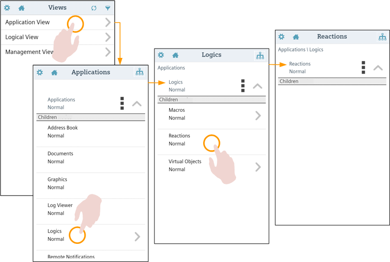
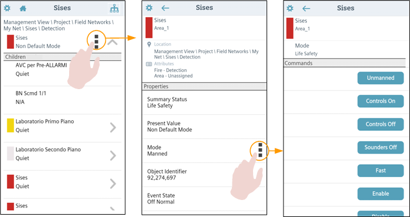

Using the Mobile App System Browser
This section provides instructions for working with the mobile app system browser. For background information see System Browser.
Prerequisites
- You are logged into the Desigo CC mobile app and connected to a Desigo CC management platform.
Locate an Object in System Browser
You want to navigate to a Desigo CC system object in the mobile app’s System browser.

- From the app Home page screen
 , tap the System browser button.
, tap the System browser button. - If the Views list displays, tap
 alongside the view you want to open (for example, Application View). Note that if there is only one view, it opens automatically.
alongside the view you want to open (for example, Application View). Note that if there is only one view, it opens automatically. - From here you can:
- Swipe up and down to scroll through the objects in the list. The list shows a maximum of 12 items at a time. Tap Next page at the bottom of the list to load the next 12 items, or tap Previous page at the top of the list to return to the preceding ones.
- Tap on one of the child objects in the list (for example, Logics) to select it (that is, go down one level in the tree).
NOTE: Objects that have children are marked with an icon, but you can also select child-less objects. - Tap the up arrow
 to go up by one level (that is, go back to the parent of the object you are currently viewing).
to go up by one level (that is, go back to the parent of the object you are currently viewing). - Tap in the action bar to return to the initial Views list.
- Navigate as described in the preceding step until you reach the desired object (node) in the system tree. To locate the source of an event, follow the nodes marked with the category color of the event.
- The object you are looking for displays at the top of the screen, with a list of its children underneath. From here you can tap
 alongside the object to view its properties.
alongside the object to view its properties.
View the Properties of an Object
- From the app Home page screen , tap the System browser button.
- If the Views list displays, tap alongside the view you want to open (for example, Management View). Note that if there is only one view it opens automatically.
- Use the and arrows to move up or down the levels of the system tree and navigate to the object you want to inspect.
- Tap the object to select it.
- The selected object displays at the top of the screen, with a list of its children underneath.
- Tap the icon alongside the currently selected object, at the top of the screen. You can also tap the object's name/description to the left of the icon.
- The object's Properties screen displays, with details about the object at the top, and a list of the object's properties underneath. An icon displays alongside those properties that have commands available for changing their value.
- From here, you can:
- Swipe up and down to scroll through the properties list.
- Tap the back arrow
 in the action bar to go back to the system tree.
in the action bar to go back to the system tree. - Tap a property with alongside it to change its value. See Commanding an Object Property.

Command an Object Property
Some object properties have commands available that you can use to change the property's value, or change the behavior of the system. You can do this directly from the mobile app.
- From the app Home page screen , tap the System browser button.
- If the Views list displays, tap alongside the view you want to open (for example, Management View). Note that if there is only one view it opens automatically.
- Use the or arrows to navigate the system tree to find the object you want to command.
- Tap the object to select it.
- The selected object displays at the top of the screen.
- Tap the icon alongside the selected object at the top of the screen. Or tap the name/description of the object itself.
- The list of the object’s properties displays. An icon marks those properties that have commands available for changing their value.
- Tap the property that you want to change. This must be a property with the icon alongside.
- The Commands screen for that property displays, with the description (and/or name) of the object at the top, and the name and current value of the property below it. Under the gray Commands bar, you will find controls (for example, command buttons, in some cases with data-entry fields for commands that require parameters) for writing that property.
- Swipe up and down to scroll through the available commands.
- Tap the button corresponding to the command you want to send. If there is a data field, enter or select the desired value first.
- The value of the property is changed.
- Tap the back arrow in the action bar to return to the Properties screen, and from there tap the back arrow again to return to the system tree.